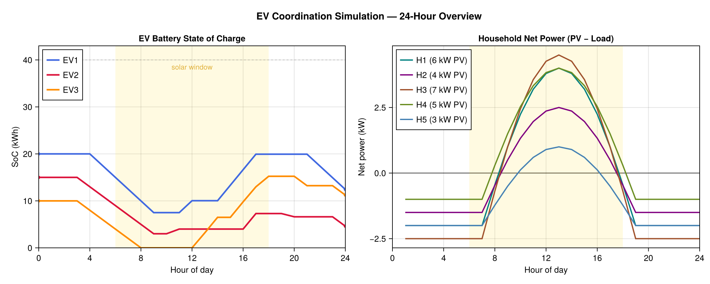
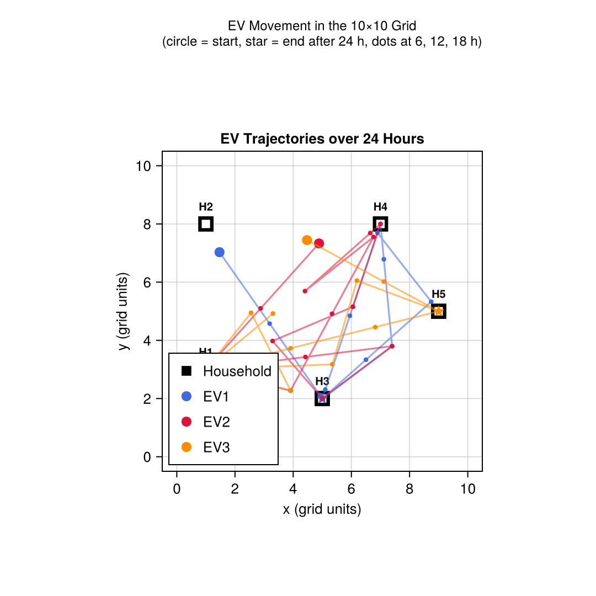

Tutorial: Electric Vehicle Coordination in a Smart Grid
This tutorial builds an agent-based simulation of electric vehicles (EVs) acting as mobile energy storages in a small neighbourhood. Households with photovoltaic (PV) generators produce surplus energy at midday; the objective is to have EVs collect that surplus and deliver it to households with a deficit — maximising local self-consumption and reducing grid exchange.
This scenario combines every major simulation feature in one example: the Area2D space for spatial positioning, on_step for physics-based movement and energy balance, message passing for decentralised coordination, and data recording for result analysis. Note, that this is a toy example, created to demonstrate the capabilities of Mango.jl.
Read the Simulation reference page before this tutorial. A working knowledge of Agents, Roles, and the Tutorial: Ping-Pong in Simulation is assumed.
Scenario
(0,10) ─────────────────── (10,10)
│ H2(1,8) H4(7,8) │
│ │
│ EV1 EV2 EV3 │
│ │
│ H1(1,3) H5(9,5) │
│ H3(5,2) │
(0,0) ─────────────────── (10,0)- 5 households at fixed positions — each has a rooftop PV installation and a constant load.
- 3 EVs that can move freely in the 2D grid — each carries a battery that can be charged at a surplus household and discharged at a deficit one.
- 1 coordinator that collects net-power reports from all households every hour and dispatches EVs to the most urgent locations.
A 1-hour time step is used. Simulated time starts at midnight on a sunny summer day (solar irradiance peaks around noon).
Step 1 — Message Types
All coordination messages are plain Julia structs. No special Mango annotations are needed.
using Mango, Dates
# Sent by a household to the coordinator every step.
struct NetPowerReport
sender_aid::String # AID of the reporting household
net_power_kw::Float64 # positive = surplus, negative = deficit
position::Position2D # where the household sits in the grid
end
# Sent by the coordinator to an EV.
struct EVAssignment
target::Position2D # where to go
action::Symbol # :charge or :discharge
power_kw::Float64 # rate while at target
endStep 2 — Household Agent
Each household tracks its cumulative grid exchange. Its on_step hook computes the hourly energy balance and reports the current net power to the coordinator.
@agent struct HouseholdAgent
pv_peak_kw::Float64 # peak PV capacity
load_kw::Float64 # constant load
grid_import_kwh::Float64 # cumulative energy bought from grid
grid_export_kwh::Float64 # cumulative energy sold to grid
self_consumed_kwh::Float64
coordinator::AgentAddress
end
# Sinusoidal PV profile: peak at solar noon (hour 12), zero before 6 and after 18.
function pv_output_kw(agent::HouseholdAgent, t::DateTime)
h = Dates.hour(t) + Dates.minute(t) / 60.0
return max(0.0, agent.pv_peak_kw * sin(π * (h - 6.0) / 12.0))
end
import Mango.on_step
function on_step(agent::HouseholdAgent, env::Environment, clock::Clock, step_size_s::Real)
step_h = step_size_s / 3600.0
pv = pv_output_kw(agent, clock.simulation_time)
net = pv - agent.load_kw # +surplus / -deficit
if net >= 0.0
agent.self_consumed_kwh += agent.load_kw * step_h
agent.grid_export_kwh += net * step_h
else
agent.self_consumed_kwh += pv * step_h
agent.grid_import_kwh += (-net) * step_h
end
# Report current net power and position to the coordinator.
pos = location(env.space, agent)
send_message(agent, NetPowerReport(aid(agent), net, pos), agent.coordinator)
endon_step is called for every agent before any message is delivered within a step. Messages sent by households in step N are received by the coordinator in the same step N (zero-delay), but the coordinator's own on_step for step N has already run. The coordinator therefore dispatches EVs based on reports from the previous step — a realistic one-step coordination lag.
Step 3 — EV Agent
An EV moves through the Area2D space at a fixed speed. When it reaches the assigned target it charges or discharges its battery. New assignments from the coordinator update the target and action.
@agent struct EVAgent
capacity_kwh::Float64
soc_kwh::Float64
max_power_kw::Float64
speed::Float64 # grid units per hour
target::Union{Position2D, Nothing}
action::Symbol # :idle, :charge, or :discharge
assigned_power_kw::Float64
end
function on_step(agent::EVAgent, env::Environment, clock::Clock, step_size_s::Real)
isnothing(agent.target) && return
step_h = step_size_s / 3600.0
current = location(env.space, agent)
dx = agent.target.x - current.x
dy = agent.target.y - current.y
dist = sqrt(dx^2 + dy^2)
max_travel = agent.speed * step_h
if dist <= max_travel
# Arrived — snap to target and perform energy exchange.
move(env.space, agent, agent.target)
energy_kwh = agent.assigned_power_kw * step_h
if agent.action == :charge
agent.soc_kwh = min(agent.capacity_kwh, agent.soc_kwh + energy_kwh)
elseif agent.action == :discharge
agent.soc_kwh = max(0.0, agent.soc_kwh - energy_kwh)
end
else
# Still en route — advance toward target.
ratio = max_travel / dist
new_pos = Position2D(current.x + dx * ratio, current.y + dy * ratio)
move(env.space, agent, new_pos)
end
end
import Mango.handle_message
function handle_message(agent::EVAgent, msg::EVAssignment, ::AbstractDict)
agent.target = msg.target
agent.action = msg.action
agent.assigned_power_kw = msg.power_kw
endStep 4 — Coordinator Agent
The coordinator collects net-power reports and, on each on_step, sends one assignment per EV. Surpluses are ranked by size (most urgent first), deficits by depth. Each EV gets exactly one target: the top-surplus locations are filled first, then remaining EV slots go to top-deficit locations.
@agent struct CoordinatorAgent
powers::Dict{String, Float64} # aid → latest net power (kW)
positions::Dict{String, Position2D} # aid → household position
ev_addresses::Vector{AgentAddress}
end
function handle_message(agent::CoordinatorAgent, msg::NetPowerReport, ::AbstractDict)
agent.powers[msg.sender_aid] = msg.net_power_kw
agent.positions[msg.sender_aid] = msg.position
end
function on_step(agent::CoordinatorAgent, env::Environment, clock::Clock, step_size_s::Real)
isempty(agent.powers) && return
# Rank households by urgency.
surpluses = sort([(k, v) for (k, v) in agent.powers if v > 0.3],
by = x -> -x[2]) # descending
deficits = sort([(k, v) for (k, v) in agent.powers if v < -0.3],
by = x -> x[2]) # ascending (most negative first)
n = length(agent.ev_addresses)
n == 0 && return
# One assignment per EV — surpluses first, then deficits to fill remaining slots.
ev_idx = 1
for (haid, power) in surpluses
ev_idx > n && break
send_message(agent,
EVAssignment(agent.positions[haid], :charge, min(power, 3.3)),
agent.ev_addresses[ev_idx])
ev_idx += 1
end
for (haid, power) in deficits
ev_idx > n && break
send_message(agent,
EVAssignment(agent.positions[haid], :discharge, min(-power, 3.3)),
agent.ev_addresses[ev_idx])
ev_idx += 1
end
endhandle_message overwrites the EV's target on every call. Sending more messages than there are EVs (as a naïve round-robin does) means some EVs receive two conflicting assignments in the same step — only the last one takes effect, which corresponds to a lower-ranked location. By capping at n messages, each EV gets exactly the most urgent available target.
Step 5 — World Setup and Spatial Placement
Create a World with a 10×10 Area2D space and zero message delay (all reports arrive in the same step they are sent).
world = create_world(
DateTime(2025, 6, 21), # summer solstice — maximum daylight
communication_sim = SimpleCommunicationSimulation(default_delay_s=0),
space = Area2D(width=10.0, height=10.0),
)Register the coordinator first, then the households (they need the coordinator's address), then the EVs.
coord = register(world, CoordinatorAgent(Dict{String,Float64}(), Dict{String,Position2D}(), AgentAddress[]))
h1 = register(world, HouseholdAgent(6.0, 2.0, 0.0, 0.0, 0.0, address(coord)))
h2 = register(world, HouseholdAgent(4.0, 1.5, 0.0, 0.0, 0.0, address(coord)))
h3 = register(world, HouseholdAgent(7.0, 2.5, 0.0, 0.0, 0.0, address(coord)))
h4 = register(world, HouseholdAgent(5.0, 1.0, 0.0, 0.0, 0.0, address(coord)))
h5 = register(world, HouseholdAgent(3.0, 2.0, 0.0, 0.0, 0.0, address(coord)))
ev1 = register(world, EVAgent(40.0, 20.0, 3.3, 3.0, nothing, :idle, 0.0))
ev2 = register(world, EVAgent(40.0, 15.0, 3.3, 3.0, nothing, :idle, 0.0))
ev3 = register(world, EVAgent(40.0, 10.0, 3.3, 3.0, nothing, :idle, 0.0))
push!(coord.ev_addresses, address(ev1), address(ev2), address(ev3))Inside the activate block, the Area2D space is initialised (agents receive random positions). Override the household positions to their fixed grid locations. EVs keep their random starting positions.
activate(world) do
# Fix household positions — buildings don't move.
household_positions = [
(h1, Position2D(1.0, 3.0)),
(h2, Position2D(1.0, 8.0)),
(h3, Position2D(5.0, 2.0)),
(h4, Position2D(7.0, 8.0)),
(h5, Position2D(9.0, 5.0)),
]
for (h, pos) in household_positions
move(world.env.space, h, pos)
end
# ...recording and stepping (see Step 6)
endStep 6 — Data Recording and Running
Set up recordings before stepping. Four metrics are tracked:
| Recording | Function | What is measured |
|---|---|---|
"soc" | record_agent! | Battery state-of-charge (kWh) per EV |
"import" | record_agent! | Cumulative grid import (kWh) per household |
"self_consumed" | record_agent! | Cumulative self-consumed PV energy (kWh) per household |
"positions" | record_position! | Position2D snapshot per EV after each step |
activate(world) do
for (h, pos) in household_positions
move(world.env.space, h, pos)
end
# record_agent! runs on ALL registered agents, so guard each lambda by type.
record_agent!(a -> a isa EVAgent ? a.soc_kwh : nothing, world, "soc")
record_agent!(a -> a isa HouseholdAgent ? a.grid_import_kwh : nothing, world, "import")
record_agent!(a -> a isa HouseholdAgent ? a.self_consumed_kwh : nothing, world, "self_consumed")
record_agent!(a -> a isa HouseholdAgent ? a.grid_export_kwh : nothing, world, "export")
# record_position! snapshots every EVAgent's Position2D after each step automatically.
record_position!(world, filter = a -> a isa EVAgent)
# Simulate 24 hours with 1-hour fixed steps.
for _ in 1:24
step_simulation(world, 3600.0)
end
endAfter the simulation completes, inspect the results:
soc_data = data_agent_collection(world, "soc")
imp_data = data_agent_collection(world, "import")
sc_data = data_agent_collection(world, "self_consumed")
println("=== EV state of charge over 24 h ===")
for ev in [ev1, ev2, ev3]
println(" $(aid(ev)): $(round.(soc_data.timeseries[aid(ev)], digits=1)) kWh")
end
println("\n=== Household grid import (total) ===")
for h in [h1, h2, h3, h4, h5]
total_import = last(imp_data.timeseries[aid(h)])
total_sc = last(sc_data.timeseries[aid(h)])
scr = round(100 * total_sc / (total_sc + total_import), digits=1)
println(" $(aid(h)): import=$(round(total_import, digits=2)) kWh self-consumption=$(scr)%")
endStep 7 — Plotting the Results
Use CairoMakie.jl (or any compatible Makie backend) to visualise the simulation output. The examples below assume the recordings and trajectory tracking from Steps 6 are already in scope.
EV state of charge and household net power
using CairoMakie
ev_agents = [ev1, ev2, ev3]
ev_colors = [:royalblue, :crimson, :darkorange]
ev_labels = ["EV1", "EV2", "EV3"]
h_agents = [h1, h2, h3, h4, h5]
h_colors = [:teal, :purple, :sienna, :olivedrab, :steelblue]
h_labels_long = ["H1 (6 kW PV)", "H2 (4 kW PV)", "H3 (7 kW PV)",
"H4 (5 kW PV)", "H5 (3 kW PV)"]
soc_data = data_agent_collection(world, "soc")
imp_data = data_agent_collection(world, "import")
ex_data = data_agent_collection(world, "export")
hours = 0:24
fig = Figure(size=(1100, 440), fontsize=13)
# Left panel — EV state of charge
axA = Axis(fig[1, 1];
title="EV Battery State of Charge", xlabel="Hour of day", ylabel="SoC (kWh)",
xticks=0:4:24)
vspan!(axA, 6, 18; color=(:gold, 0.12))
hlines!(axA, [40]; color=(:gray, 0.4), linestyle=:dash, linewidth=1)
for (ev, col, lbl) in zip(ev_agents, ev_colors, ev_labels)
soc = soc_data.timeseries[aid(ev)]
lines!(axA, hours, soc; color=col, linewidth=2.5, label=lbl)
end
axislegend(axA; position=:lt)
xlims!(axA, 0, 24); ylims!(axA, 0, 43)
# Right panel — household net power
axB = Axis(fig[1, 2];
title="Household Net Power (PV − Load)", xlabel="Hour of day", ylabel="Net power (kW)",
xticks=0:4:24)
hlines!(axB, [0]; color=:black, linewidth=0.8)
vspan!(axB, 6, 18; color=(:gold, 0.12))
for (h, col, lbl) in zip(h_agents, h_colors, h_labels_long)
imp = imp_data.timeseries[aid(h)]
ex = ex_data.timeseries[aid(h)]
net = [(ex[t] - ex[t-1]) - (imp[t] - imp[t-1]) for t in eachindex(imp)[2:end]]
lines!(axB, 1:24, net; color=col, linewidth=2.0, label=lbl)
end
axislegend(axB; position=:lt)
xlims!(axB, 0, 24)
Label(fig[0, :]; text="EV Coordination Simulation — 24-Hour Overview",
fontsize=15, font=:bold)Result:

The left panel shows each EV's battery level over the day. All three EVs charge during the solar surplus window (shaded, roughly 08:00–16:00) and some discharge at deficit households in the early morning and evening. The right panel confirms the expected sinusoidal PV profile: deep deficit at night, strong surplus around noon.
EV trajectories in the 2D grid
Position snapshots were already collected by record_position! in Step 6. Retrieve the history and plot:
pos_data = position_history(world) # AgentsRecording with timeseries[aid] => Vector{Position2D}
fig2 = Figure(size=(540, 540), fontsize=13)
axT = Axis(fig2[1, 1];
title="EV Trajectories over 24 Hours",
xlabel="x (grid units)", ylabel="y (grid units)",
aspect=DataAspect(), xticks=0:2:10, yticks=0:2:10)
h_labels = ["H1", "H2", "H3", "H4", "H5"]
for (lbl, (_, pos)) in zip(h_labels, household_positions)
scatter!(axT, [pos.x], [pos.y]; color=:black, markersize=22, marker=:rect)
scatter!(axT, [pos.x], [pos.y]; color=:white, markersize=12, marker=:rect)
text!(axT, pos.x, pos.y + 0.6; text=lbl, fontsize=10, align=(:center,:center), font=:bold)
end
scatter!(axT, [NaN], [NaN]; color=:black, markersize=14, marker=:rect, label="Household")
for (ev, col, lbl) in zip(ev_agents, ev_colors, ev_labels)
track = pos_data.timeseries[aid(ev)] # Vector{Position2D}, one entry per step
xs = [p.x for p in track]; ys = [p.y for p in track]
lines!(axT, xs, ys; color=(col, 0.55), linewidth=1.6)
scatter!(axT, [xs[1]], [ys[1]]; color=col, markersize=10, marker=:circle,
strokecolor=col, strokewidth=2, label=lbl)
scatter!(axT, [xs[end]], [ys[end]]; color=col, markersize=12, marker=:star5)
end
axislegend(axT; position=:lb)
limits!(axT, -0.5, 10.5, -0.5, 10.5)Result:

Each coloured path shows where one EV traveled over 24 hours. The filled circle marks the random starting position; the star marks the final position. The EVs cluster around the households with the strongest surplus (H1, H2, H3 — high PV peak) during daylight hours, then shift toward deficit locations as the sun sets.
Complete Standalone Script
using Mango, Dates
# ── Message types ────────────────────────────────────────────────────────────
struct NetPowerReport
sender_aid::String
net_power_kw::Float64
position::Position2D
end
struct EVAssignment
target::Position2D
action::Symbol
power_kw::Float64
end
# ── Household ────────────────────────────────────────────────────────────────
@agent struct HouseholdAgent
pv_peak_kw::Float64
load_kw::Float64
grid_import_kwh::Float64
grid_export_kwh::Float64
self_consumed_kwh::Float64
coordinator::AgentAddress
end
function pv_output_kw(agent::HouseholdAgent, t::DateTime)
h = Dates.hour(t) + Dates.minute(t) / 60.0
return max(0.0, agent.pv_peak_kw * sin(π * (h - 6.0) / 12.0))
end
import Mango.on_step
function on_step(agent::HouseholdAgent, env::Environment, clock::Clock, step_size_s::Real)
step_h = step_size_s / 3600.0
pv = pv_output_kw(agent, clock.simulation_time)
net = pv - agent.load_kw
if net >= 0.0
agent.self_consumed_kwh += agent.load_kw * step_h
agent.grid_export_kwh += net * step_h
else
agent.self_consumed_kwh += pv * step_h
agent.grid_import_kwh += (-net) * step_h
end
pos = location(env.space, agent)
send_message(agent, NetPowerReport(aid(agent), net, pos), agent.coordinator)
end
# ── EV ───────────────────────────────────────────────────────────────────────
@agent struct EVAgent
capacity_kwh::Float64
soc_kwh::Float64
max_power_kw::Float64
speed::Float64
target::Union{Position2D, Nothing}
action::Symbol
assigned_power_kw::Float64
end
function on_step(agent::EVAgent, env::Environment, clock::Clock, step_size_s::Real)
isnothing(agent.target) && return
step_h = step_size_s / 3600.0
current = location(env.space, agent)
dx = agent.target.x - current.x
dy = agent.target.y - current.y
dist = sqrt(dx^2 + dy^2)
max_travel = agent.speed * step_h
if dist <= max_travel
move(env.space, agent, agent.target)
energy_kwh = agent.assigned_power_kw * step_h
if agent.action == :charge
agent.soc_kwh = min(agent.capacity_kwh, agent.soc_kwh + energy_kwh)
elseif agent.action == :discharge
agent.soc_kwh = max(0.0, agent.soc_kwh - energy_kwh)
end
else
ratio = max_travel / dist
move(env.space, agent,
Position2D(current.x + dx * ratio, current.y + dy * ratio))
end
end
import Mango.handle_message
function handle_message(agent::EVAgent, msg::EVAssignment, ::AbstractDict)
agent.target = msg.target
agent.action = msg.action
agent.assigned_power_kw = msg.power_kw
end
# ── Coordinator ───────────────────────────────────────────────────────────────
@agent struct CoordinatorAgent
powers::Dict{String, Float64}
positions::Dict{String, Position2D}
ev_addresses::Vector{AgentAddress}
end
function handle_message(agent::CoordinatorAgent, msg::NetPowerReport, ::AbstractDict)
agent.powers[msg.sender_aid] = msg.net_power_kw
agent.positions[msg.sender_aid] = msg.position
end
function on_step(agent::CoordinatorAgent, env::Environment, clock::Clock, step_size_s::Real)
isempty(agent.powers) && return
surpluses = sort([(k, v) for (k, v) in agent.powers if v > 0.3], by = x -> -x[2])
deficits = sort([(k, v) for (k, v) in agent.powers if v < -0.3], by = x -> x[2])
n = length(agent.ev_addresses)
n == 0 && return
ev_idx = 1
for (haid, power) in surpluses
ev_idx > n && break
send_message(agent,
EVAssignment(agent.positions[haid], :charge, min(power, 3.3)),
agent.ev_addresses[ev_idx])
ev_idx += 1
end
for (haid, power) in deficits
ev_idx > n && break
send_message(agent,
EVAssignment(agent.positions[haid], :discharge, min(-power, 3.3)),
agent.ev_addresses[ev_idx])
ev_idx += 1
end
end
# ── Simulation setup ─────────────────────────────────────────────────────────
world = create_world(
DateTime(2025, 6, 21),
communication_sim = SimpleCommunicationSimulation(default_delay_s=0),
space = Area2D(width=10.0, height=10.0),
)
coord = register(world, CoordinatorAgent(Dict{String,Float64}(), Dict{String,Position2D}(), AgentAddress[]))
h1 = register(world, HouseholdAgent(6.0, 2.0, 0.0, 0.0, 0.0, address(coord)))
h2 = register(world, HouseholdAgent(4.0, 1.5, 0.0, 0.0, 0.0, address(coord)))
h3 = register(world, HouseholdAgent(7.0, 2.5, 0.0, 0.0, 0.0, address(coord)))
h4 = register(world, HouseholdAgent(5.0, 1.0, 0.0, 0.0, 0.0, address(coord)))
h5 = register(world, HouseholdAgent(3.0, 2.0, 0.0, 0.0, 0.0, address(coord)))
ev1 = register(world, EVAgent(40.0, 20.0, 3.3, 3.0, nothing, :idle, 0.0))
ev2 = register(world, EVAgent(40.0, 15.0, 3.3, 3.0, nothing, :idle, 0.0))
ev3 = register(world, EVAgent(40.0, 10.0, 3.3, 3.0, nothing, :idle, 0.0))
push!(coord.ev_addresses, address(ev1), address(ev2), address(ev3))
household_positions = [
(h1, Position2D(1.0, 3.0)),
(h2, Position2D(1.0, 8.0)),
(h3, Position2D(5.0, 2.0)),
(h4, Position2D(7.0, 8.0)),
(h5, Position2D(9.0, 5.0)),
]
activate(world) do
for (h, pos) in household_positions
move(world.env.space, h, pos)
end
record_agent!(a -> a isa EVAgent ? a.soc_kwh : nothing, world, "soc")
record_agent!(a -> a isa HouseholdAgent ? a.grid_import_kwh : nothing, world, "import")
record_agent!(a -> a isa HouseholdAgent ? a.self_consumed_kwh : nothing, world, "self_consumed")
record_agent!(a -> a isa HouseholdAgent ? a.grid_export_kwh : nothing, world, "export")
record_position!(world, filter = a -> a isa EVAgent)
for _ in 1:24
step_simulation(world, 3600.0)
end
end
# ── Results ───────────────────────────────────────────────────────────────────
soc_data = data_agent_collection(world, "soc")
imp_data = data_agent_collection(world, "import")
sc_data = data_agent_collection(world, "self_consumed")
println("=== EV state of charge over 24 h (kWh) ===")
for ev in [ev1, ev2, ev3]
println(" $(aid(ev)): $(round.(soc_data.timeseries[aid(ev)], digits=1))")
end
println("\n=== Household results ===")
for h in [h1, h2, h3, h4, h5]
total_import = last(imp_data.timeseries[aid(h)])
total_sc = last(sc_data.timeseries[aid(h)])
denom = total_sc + total_import
scr = denom > 0 ? round(100 * total_sc / denom, digits=1) : 100.0
println(" $(aid(h)): import=$(round(total_import, digits=2)) kWh " *
"self-consumption rate=$(scr)%")
endWhat's Next?
- Topology-aware coordination — use Topology to limit which households an EV can reach from its current position.
- Stochastic delays — swap
SimpleCommunicationSimulationforDelayProviderCommunicationSimulationto model unreliable wireless communication between coordinator and EVs. - Competing objectives — add a market role so households can bid for EV charging capacity and the coordinator resolves the auction.
- Finer position granularity — call
record_position!with a smaller step size or without any filter to record all agents and inspect spatial dynamics at sub-hourly resolution. - Roles-based refactor — extract the energy-balance logic into a
PVLoadRoleand attach it to different base agents (household, industry, charging station) without code duplication; see Roles.